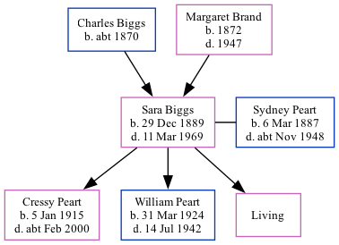

Sara Jane Peart (née Biggs) 1889 - 1969
[ Home ] | [ Calendar ] | [ Surnames Index ] | [ Family History ]The daughter of Charles Biggs and Margaret Brand, Sara Biggs was born in North Shields, Tyne and Wear, England on Dec 29, 18891 and married Sydney Peart (a locomotive engine driver with whom she had 3 children: Cressy, William Frederick and Doreen, along with 1 surviving child) in Tynemouth, Tyne and Wear, England around Nov 19082, which is also where she died on Mar 11, 19691.
Parents
- Charles Giddens was born c. 1870
- Margaret Jane M was born in 1872
Children
- Cressy was born on Jan 5, 1915
- William Frederick was born on Mar 31, 1924
Citations
- England & Wales deaths 1837-2007 - Findmypast
- England & Wales Marriages 1837-2005 - Findmypast
Media
England & Wales marriages 1837-2005 - BMD/M/1908/4/AZ/000033/073
England & Wales deaths 1837-2007 - BMD/D/1969/1/AZ/000885/008
Family Tree
Generated by Ged2Site. Last updated on Jul 20, 2025